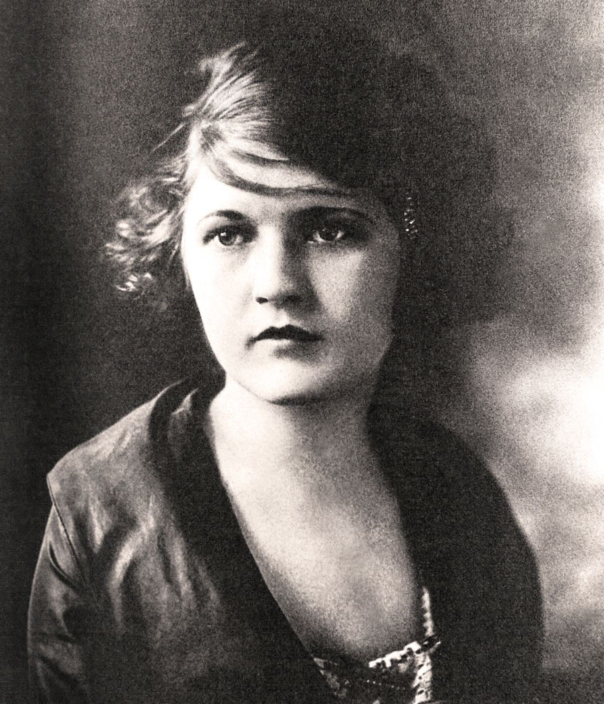
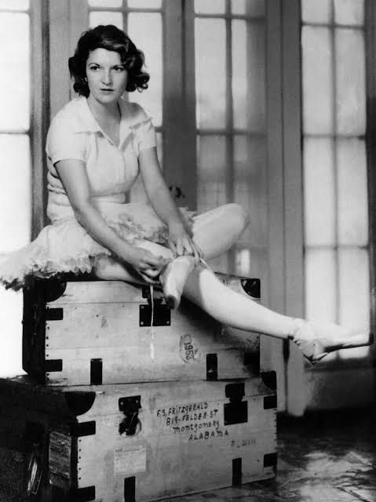
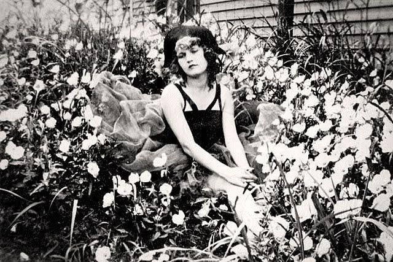
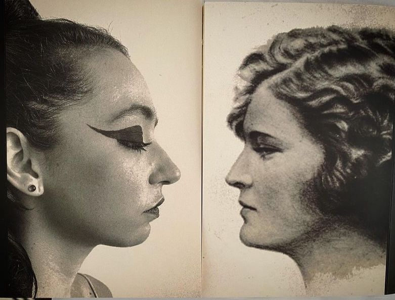

Desenterrando Zelda Fitzgerald

Ou A angústia como base para a imaginação e criação artística
Em março de 2021, em plena pandemia de Covid-19, foi realizada a primeira apresentação oficial de “Me Enterrem com Zelda Fitzgerald”, um solo teatral de concepção autoral elaborado como Trabalho de Conclusão de Curso para a Pós-graduação lato sensu em Direção e Atuação da Escola Superior de Artes Célia Helena (ESCH), com orientação da Prof. Me. Joana Doria.
O trabalho foi uma forma de me aproximar corporalmente de pinturas, esculturas e fotografias feitas por mulheres que foram invisibilizadas e esquecidas pela História da Arte do séc. XVI ao séc. XXI, contando também com a provocação textual de uma dramaturgia autoral, na época em elaboração, sobre a vida e obra de Zelda Fitzgerald. A narrativa foi composta por cartas escritas diariamente por livre-associação para Zelda e minha Avó paterna após a realização da série de performances “Disturb To Resist”, realizada em isolamento no meu apartamento no centro da capital de São Paulo, com transmissão ao vivo pela plataforma Zoom para provocadoras convidadas e pessoas interessadas.
Em paralelo a essa pesquisa, a atriz, diretora e dramaturga Daniela Schitini também pesquisava brilhantemente a vida e obra de Zelda, estudando minuciosamente as cartas que a artista escreveu para seu marido F. Scott Fitzgerald e sua vida em internação psiquiátrica em uma série de manicômios diferentes, culminando em sua trágica morte.
Quando descobrimos sobre o trabalho uma da outra, nos demos as mãos e juntamos nossas dramaturgias em uma nova peça teatral, inédita e autoral, que retrata a juventude e a posterior clausura de Zelda em sua fase adulta.
Hoje o projeto ganhou maiores proporções e um novo nome, abraçando mais mulheres artistas inquietas com a vida de Zelda. Com atuação minha e de Nicole Cordery, direção de Malú Bazán, dramaturgismo/assistência de direção de Daniela Schitini e produção de Marcela Horta, o projeto “Desenterrando Zelda” aguarda uma chance de entrar em cartaz nos palcos paulistanos.
A eterna espera pelos resultados de diversos editais inscritos e não contemplados impossibilitou a realização do Projeto que, sinceramente, creio que será feito na guerrilha, face a face com a angústia de um trabalho não concretizado e inquietação pelo material artístico.
Uma vez que esse projeto começou com cartas estudadas, escritas, lidas e encenadas para avós e Zeldas e Scotts, decidi então escrever mais uma Carta Aberta ao invés de um artigo de opinião, em celebração ao 123º aniversário de Zelda, que calhou de ser no mesmo dia em que escrevo este texto: 24 de julho de 2023.
Espero que apreciem e se inquietem pela vida e obra dessa artista que ainda nos comunica tanto.
E que possamos, finalmente, entrar em cartaz com “Desenterrando Zelda” e compartilhar com o público os resultados desses anos intensos de pesquisa.
Carta Aberta para Zelda Fitzgerald
Querida Zelda, hoje é 24 de julho de 2023, seu aniversário de 123 anos, e penso que devemos te celebrar sempre com bons drinks, música alta, roupas brilhantes, pérolas despedaçadas, vestígios de perfumes e muita imaginação artística e criativa, afinal, é disso que nos alimentamos, é isso que nos salva. Feche seus olhos e se imagine n’O Jardim das Delícias Terrenas, de Hieronymus Bosch. Você está no paraíso terrestre, o quadro do meio, e isso tem uma bela vantagem: não é preciso ser sublime para estar no verdadeiro paraíso do quadro à esquerda, nem sofrer a punição do inferno à direita. Sua sensação é de viver na máxima completude o seu corpo humano, celebrar a vida, o encontro e a unidade com a natureza e os animais, em constante contato com tudo o que te rodeia. Desfrute das dádivas da terra e se aconchegue com a selvageria dos animais e das feras. Sinta que você — neste momento enquanto um ser deste imenso Jardim — é também tudo: todas as personificações retratadas são pequenas partes de um único ser, e este ser é você. Será este sentimento o de ser o Uno-primordial, o principium individuationis esclarecido por Nietzsche , em seu Nascimento da Tragédia? Quando estou sozinha, gosto de fazer este exercício que propus a você de entrar no Jardim das Delícias e me sentir celebrando a natureza da forma mais pura e completa possível. Nietzsche descreve a natureza como “alheada, inamistosa ou subjugada”, três palavras que para mim se contradizem, mas que fazem sentido quando postas juntas. E ele ainda completa: “[a natureza] volta a celebrar a festa de reconciliação com seu filho perdido: o homem” (NIETZSCHE, 2012, p. 31). Abro licença poética aqui para mudar a palavra “homem” por “ser humano” no final da citação. Já está mais do que na hora de subvertermos os padrões, inclusive nas traduções.
A reconciliação humana com a natureza pensada por Nietzsche é minha utopia pessoal. Impossível ler “O Nascimento da Tragédia” e não me imaginar fazendo parte do Jardim de Bosch. Foi intrínseco à leitura. Acho que foi n’O Nascimento da Tragédia que, inconscientemente dois anos atrás, tudo nasceu. A pesquisa começou a ganhar forma na descrição nietzschiana quase onírica de Apolo e Dionísio e nos traços precursores surrealistas de Bosch, que permaneceram na minha cabeça. Uma grata surpresa ter lido Nietzsche antes de toda a pesquisa e uma pena ter tido a autodisciplina de escrever sobre ele somente agora, mas tem um lado bom nesse intervalo das ausências: o sonho decantou, o tempo foi precioso e olho para tudo com mais clareza e calma. “É preciso sair da ilha para ver a ilha” ... Saramago já deu o verbo há muito tempo... Escrever esta carta me faz ter a sensação de estar vivendo entre Apolo e Dionísio, entre o sonho e a embriaguez elucidada por Nietzsche, sensação quiçá parecida ao daquela atriz ou daquele ator que se destacava de um coro grego em plena tragédia — o corifeu personificado —, para dar forma à contradição humana e aos sentimentos enlevados.
Sorte a nossa. Essa nossa pele e a nossa eternidade são amareladas como pérolas envelhecidas. O apolíneo e o dionisíaco também foram constantes quando realizei a série de performances “Disturb To Resist” em 2020/2021: quando transpus para meu corpo as pinturas e esculturas de mulheres artistas desconhecidas e esquecidas pela História da Arte, do século XVI ao século XXI, senti-me neste encontro entre a lucidez e a embriaguez em plena tragédia vital. Enquanto estava presa na forma transposta e proposta pela obra de arte, me sentia dentro do sonho de Apolo, sentindo na carne a arte bela — ou bela arte, como você preferir. Quando chegava à exaustão física eu era tomada pelo inconsciente embriagado e ao mesmo tempo lúcido de Dionísio. A transposição levou ao aprofundamento das percepções e me pego indagando o que as modelos-vivos pensavam enquanto ficavam horas a fio paradas na mesma posição para que o pintor desse vida à escultura de sua forma. A bela musa que fez o homem criar a bela arte... ai... sinto um grande enfado histórico com tudo isso. Creio que a minha distração estática enquanto estava reproduzindo corporalmente a pintura ou a escultura se tornou algo habitual em todas as performances e isso levou ao treino do olhar poético. As imagens vinham e ganhavam vida, sem que eu precisasse pressupor qual o próximo movimento a ser feito ou me procurar pelo espaço para descobrir algum impulso para levar o corpo adiante na pesquisa: simplesmente a presença na obra transposta no corpo trazia a potência poética que buscava.
O princípio dionisíaco de Nietzsche faz parte da minha utopia, meu objetivo não de pesquisa, mas de olhar pela vida e acho que você foi meio assim também, Zelda, se libertando de todas as amarras sociais patriarcais e machistas. Você era a embriaguez pura de Dionísio. Ele estava dentro de você o tempo todo, mas todo mundo só via Apolo e sua luz solar. Agora que você faz 123 anos, seus contos, pinturas e seu livro me parecem ser uma revanche da mulher que te habitou esse tempo todo e não teve voz. Dionísio vive em você e em cada mulher que encontra na arte sua força vital e refúgio.
Mudei de ideia. Prefiro pensar em Afrodite, e não mais em Dionísio. Acho que Nietzsche escolheu Dionísio porque ele era homem. Não me entenda mal, minha intenção não é de excluir a figura masculina. A intenção aqui é entender também o masculino em mim através da minha observação, mesmo que jovem, do mundo: entendê-lo, respeitá-lo, aceitá-lo e transformá-lo. É sobre ir além, mesmo sabendo que ver o lado feminino causa sofrimento no masculino e vice-versa. Nós somos masculino e feminino, e amo observar como cada um lida com esses dois polos dentro de si nos pequenos detalhes cotidianos que lhes escapam.

Agora se rompem todas as rígidas e hostis delimitações que a necessidade, a arbitrariedade ou a “moda imprudente” estabeleceram entre os homens. Agora, graças ao evangelho da harmonia universal, cada qual se sente não só unificado, conciliado, fundido com o seu próximo, mas um só, como se o véu de Maia tivesse sido rasgado e reduzido a tiras, esvoaçasse diante do misterioso Uno-primordial. Cantando e dançando, manifesta-se o homem como membro de uma comunidade superior: ele desaprendeu a andar e a falar, e está a ponto de, dançando, sair voando pelos ares. De seus gestos fala o encantamento. Assim como agora os animais falam e a terra dá leite e mel, do interior do homem também soa algo de sobrenatural: ele se sente como um deus, ele próprio caminha agora tão extasiado e enlevado, como vira em sonho os deuses caminharem. O homem não é mais artista, tornou-se obra de arte: a força artística de toda a natureza, para a deliciosa satisfação do Uno-primordial, revela-se aqui sob o frêmito da embriaguez. (NIETZSCHE, 2012, p.31).
Vamos subverter os padrões novamente? Não consigo deixar de imaginar que se na época fosse uma mulher falando este texto de Nietzsche, e não o grande filósofo, a mulher seria considerada louca simplesmente por falar “dançando, saiu voando pelos ares”. Essa utopia de ser Uno com a natureza e com toda a humanidade está tão longe de se concretizar que me faz pensar que todos nós estamos precisando de uma dose de alteridade e sensatez de alto nível misturada com boas proporções de gin e whiskey. E faz também eu me sentir uma criança lendo gibis embaixo da árvore e sonhando com o mundo que deveria ser e nunca foi, mas que talvez um dia será.

Os desejos impulsores diferenciam-se conforme o sexo, o caráter e as circunstâncias de vida da personalidade que fantasia; mas se dividem naturalmente em dois grupos principais: ou são desejos ambiciosos, que servem à exaltação da personalidade, ou eróticos. Na mulher jovem predominam quase exclusivamente os desejos eróticos, pois sua ambição é geralmente absorvida pelo empenho amoroso; no homem jovem, ao lado dos desejos eróticos sobressaem os egoístas e ambiciosos. Mas vamos enfatizar a frequente união desses dois grupos, em vez da oposição entre eles. Assim como em muitas pinturas de altares se vê, num canto, a imagem do doador, na maioria das fantasias ambiciosas podemos encontrar, num ponto qualquer, a dama para quem o fantasiador realiza todas aquelas façanhas, a cujos pés ele deposita todos os seus triunfos. Como veem os senhores, aqui há bons motivos para o ocultamento; na mulher bem educada não se admite mais que um mínimo de necessidades eróticas, e o homem jovem deve aprender a suprimir o excesso de autoestima que traz consigo da infância mimada, para integrar-se numa sociedade cheia de indivíduos com exigências iguais. (FREUD, 2015, p.173).
Será que Freud conhecia mesmo seu lado feminino?
Nos últimos meses, li escritos de muitos pensadores homens e absolutamente todos os seus textos citam, em algum momento, Homero. Todos esses filósofos começaram a se confundir na minha cabeça e eu não aguentava mais ler sobre Homero e não saber exatamente quem ele realmente era. Aparentemente, Homero foi o poeta pioneiro em traçar as linhas fundamentais da comédia, dramatizando não o vitupério, mas o ridículo. É chamado de “Supremo” pelos filósofos. Apesar de ainda não ter entendido nada de Homero, nem de Freud, nem de Nietzche, gostei da ideia de dramatizar o ridículo. A morte é uma contradição e o sofrimento é uma autofruição do ser humano, a que todos estamos fadados a lidar em vida: morte e sofrimento. Já que ambos são irrevogáveis, por que não ironizá-los e dramatizá-los? Prefiro o humor ácido que o choro solitário, por isso te desenterro, Zelda. A ironia acerca da finitude da vida escandaliza nossas ações e nos choca enquanto seres viventes e penso que, por conta desta compreensão, somente através dos limites humanos é que chegamos à realidade: a vida é nada, e é tudo. E em meio a isso, a nossa necessidade de sermos reconhecidas revela em nós a nossa personalidade. Esses são os nossos verdadeiros desejos impulsores, e talvez não se diferenciem tanto conforme o sexo...
Acho que pensei demais. Parece que meu crânio está pesando três quilos a mais e meus neurônios já estão cansados de tantas sinapses. Só sei que no fim disso tudo, em resumo, ainda sinto saudades de dançar uma valsa só minha. E nós dançamos, Zelda, todos esses dias, em homenagem à nossa vida. Você em seus plenos e recém-feitos 123 anos, e eu, nos meus conturbados e nada concretos 25. Se for pra escolher entre Dionísio e Apolo, prefiro a perturbação dionisíaca. Imagino que você escolheria Apolo simplesmente por ser tão inabalavelmente confiante, seguindo tranquilamente a vida com toda a sua sabedoria e beleza, afinal, acho que era isso que você buscava.

Mas, mesmo presa em contradições, deixo aqui uma despedida com um recado à mulher do futuro, aquela que virá depois de nós: celebremos nossa existência, nossa loucura e nossa lucidez com altas doses de ironia, sarcasmo e dança — somos belas quando nos utilizamos da liberdade. Que a arte e seus estudos nos instruam cada vez mais. Que não suavizemos nunca a selvageria dos nossos apetites e que a sensibilidade seja a base de toda a ciência. Que entremos sempre em contato com os grandes filósofos do passado, afinal, estamos aqui hoje por causa deles, mas não nos esqueçamos das mulheres artistas ao longo dos séculos: elas abriram todos os caminhos para nossa liberdade e mudaram o curso da História. Que possamos viver no desequilíbrio equilibrado de Dionísio e Apolo, e que nossa criança interior — tão belamente estudada por Freud — para sempre viva e se manifeste na brincadeira de ser adulto que nós todos nos propomos dia após dia.
Proponho também que você, que está lendo isso agora — seja você a própria Zelda além da vida ou uma pessoa desconhecida —, pare absolutamente tudo o que está fazendo e faça-lhe um drink. O seu favorito. Coloque uma música de décadas passadas, bem alto. Dance. Faça uma festa para você mesmx e a curta sozinhx. Comemore a sua existência, afinal, nada nunca foi tão urgente quanto a celebração da vida.
Sempre com amor, afeto e pequenas faíscas de revolução,
Larissa da Matta.
Julho de 2023
